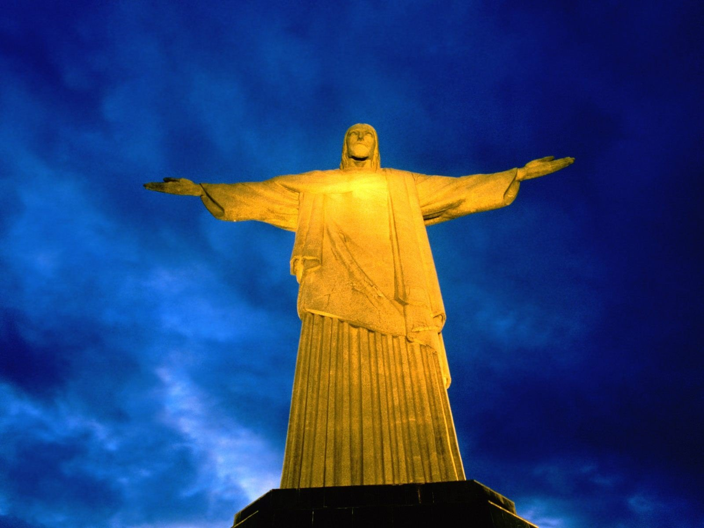

Christ Redempter
Le Christ Rédempteur (en portugais, Cristo Redentor) est une statue monumentale
située au sommet du mont Corcovado, à Rio de Janeiro, au Brésil.
Considéré comme l'un des symboles les plus emblématiques du pays,
il incarne la foi chrétienne et l'esprit d'accueil des Brésiliens.
Caractéristiques principales :
Dimensions :
Hauteur totale : 38 mètres (incluant son piédestal de 8 mètres). Envergure des bras : 28 mètres. Poids : environ 1 145 tonnes.Matériaux :
La statue est construite en béton armé et recouverte de stéatite,un matériau choisi pour sa durabilité et sa résistance aux intempéries.
Signification :
Les bras ouverts symbolisent la paix et l'amour,offrant une bénédiction universelle aux habitants de Rio
et à ses visiteurs. 
Reconnaissance mondiale :
En 2007, le Christ Rédempteur a été élu comme l'une des sept nouvelles merveilles du monde lors d'un vote mondial.C'est aujourd'hui un site incontournable pour les touristes
et un lieu de pèlerinage religieux majeur.